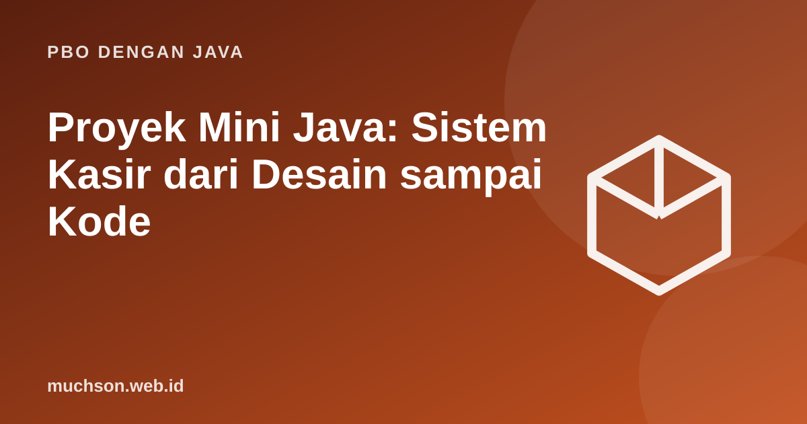

Beranda › Artikel › PBO dengan Java
PBO dengan JavaProyek Mini Java: Sistem Kasir dari Desain sampai Kode
Teori PBO baru melekat setelah dipakai. Di sini kita membangun sistem kasir kecil dari nol: menganalisis kebutuhan, menentukan class, menggambar hubungan, menulis kode, lalu mengujinya. Ikuti alurnya, lalu kembangkan sendiri sebagai latihan.
Sebaiknya sudah paham: seluruh materi PBO Java sebelumnya

Tujuan belajar
Setelah membaca dan mencoba materi ini, Anda mampu:
- mengubah deskripsi kebutuhan menjadi daftar class dan tanggung jawabnya
- menerapkan enkapsulasi, interface, polimorfisme, dan koleksi dalam satu proyek
- memakai exception untuk aturan bisnis
- menguji alur utama dengan skenario
- mengidentifikasi titik pengembangan lanjut
Langkah 1: kebutuhan
- Kasir mencatat pesanan berisi beberapa item (produk dan jumlah).
- Produk punya kode, nama, harga, dan stok; stok berkurang saat dibeli dan tidak boleh negatif.
- Ada beberapa jenis diskon (tanpa diskon, persentase, potongan tetap bila belanja minimal).
- Struk menampilkan rincian, diskon, PPN 11 persen, dan total.
- Pembayaran tunai menghitung kembalian dan menolak uang kurang.
Langkah 2: mencari class (kata benda dan kata kerja)
| Kata dalam kebutuhan | Menjadi | Tanggung jawab |
|---|---|---|
| produk | class Produk | Menyimpan data produk dan menjaga stok |
| pesanan, item | class Pesanan (memuat ItemPesanan) | Menghimpun item dan menghitung subtotal |
| diskon (banyak jenis) | interface Diskon | Menghitung potongan; setiap jenis satu implementasi |
| stok tidak cukup, uang kurang | Exception khusus | Menyatakan pelanggaran aturan bisnis |
| struk | class Struk | Menyusun teks tampilan |
Langkah 3: kode
import java.util.*;
class StokTidakCukupException extends RuntimeException {
StokTidakCukupException(String nama, int diminta, int tersedia) {
super("Stok " + nama + " tidak cukup (diminta " + diminta + ", tersedia " + tersedia + ")");
}
}
class UangKurangException extends Exception {
UangKurangException(long kurang) { super("Uang kurang Rp" + kurang); }
}
class Produk {
private final String kode, nama;
private final long harga;
private int stok;
Produk(String kode, String nama, long harga, int stok) {
if (harga <= 0) throw new IllegalArgumentException("harga harus positif");
this.kode = kode; this.nama = nama; this.harga = harga; this.stok = stok;
}
String nama() { return nama; }
long harga() { return harga; }
int stok() { return stok; }
void kurangiStok(int n) {
if (n > stok) throw new StokTidakCukupException(nama, n, stok);
stok -= n;
}
}
record ItemPesanan(Produk produk, int jumlah) {
long subtotal() { return produk.harga() * jumlah; }
}
interface Diskon { long potongan(long subtotal); }
class TanpaDiskon implements Diskon { public long potongan(long s) { return 0; } }
class DiskonPersen implements Diskon {
private final int persen;
DiskonPersen(int persen) { this.persen = persen; }
public long potongan(long s) { return s * persen / 100; }
}
class DiskonMinimal implements Diskon {
private final long minimal, potong;
DiskonMinimal(long minimal, long potong) { this.minimal = minimal; this.potong = potong; }
public long potongan(long s) { return s >= minimal ? potong : 0; }
}
class Pesanan {
private static final int PPN = 11;
private final List<ItemPesanan> items = new ArrayList<>();
void tambah(Produk p, int jumlah) {
if (jumlah <= 0) throw new IllegalArgumentException("jumlah harus positif");
p.kurangiStok(jumlah); // aturan bisnis ditegakkan di sini
items.add(new ItemPesanan(p, jumlah));
}
long subtotal() { return items.stream().mapToLong(ItemPesanan::subtotal).sum(); }
long total(Diskon d) {
long setelahDiskon = subtotal() - d.potongan(subtotal());
return setelahDiskon + setelahDiskon * PPN / 100;
}
String struk(Diskon d) {
StringBuilder sb = new StringBuilder();
for (ItemPesanan i : items)
sb.append(String.format("%-10s %2d x %7d = %8d%n", i.produk().nama(), i.jumlah(), i.produk().harga(), i.subtotal()));
sb.append(String.format("%-27s %8d%n", "Subtotal", subtotal()));
sb.append(String.format("%-27s %8d%n", "Diskon", -d.potongan(subtotal())));
sb.append(String.format("%-27s %8d%n", "Total + PPN 11%", total(d)));
return sb.toString();
}
long bayar(long uang, Diskon d) throws UangKurangException {
long total = total(d);
if (uang < total) throw new UangKurangException(total - uang);
return uang - total;
}
}
public class Main {
public static void main(String[] args) throws Exception {
Produk kopi = new Produk("K1", "Kopi", 20_000, 10);
Produk roti = new Produk("R1", "Roti", 12_000, 3);
Pesanan p = new Pesanan();
p.tambah(kopi, 3);
p.tambah(roti, 2);
Diskon diskon = new DiskonMinimal(100_000, 10_000);
System.out.print(p.struk(diskon));
try { p.bayar(80_000, diskon); }
catch (UangKurangException e) { System.out.println(e.getMessage()); }
System.out.println("kembalian: " + p.bayar(100_000, diskon));
try { new Pesanan().tambah(roti, 5); }
catch (StokTidakCukupException e) { System.out.println(e.getMessage()); }
System.out.println("sisa stok roti: " + roti.stok());
}
}Kopi 3 x 20000 = 60000
Roti 2 x 12000 = 24000
Subtotal 84000
Diskon 0
Total + PPN 11% 93240
Uang kurang Rp13240
kembalian: 6760
Stok Roti tidak cukup (diminta 5, tersedia 1)
sisa stok roti: 1
Apa yang kita peroleh
Perhatikan hasil desain: Pesanan tidak mengetahui jenis diskon, produk menjaga stoknya sendiri, dan aturan uang kurang berada di satu tempat. Menambah diskon baru atau metode pembayaran QRIS tidak mengubah class yang sudah ada.
Langkah 4: uji dengan skenario
| Skenario | Diharapkan |
|---|---|
| Membeli 3 kopi dan 2 roti tanpa memenuhi minimal diskon | Total 93.240 (84.000 + PPN) |
| Membeli roti melebihi stok | StokTidakCukupException, stok tidak berubah |
| Membayar kurang dari total | UangKurangException dengan selisih |
| Jumlah nol atau negatif | IllegalArgumentException |
Tantangan pengembangan
- Simpan produk dan penjualan ke berkas CSV atau basis data (lihat materi File I/O).
- Tambahkan metode pembayaran (interface MetodeBayar: Tunai, QRIS, Kartu).
- Buat laporan penjualan harian dengan stream dan groupingBy.
- Tulis tes JUnit untuk setiap aturan di tabel skenario.
- Gunakan BigDecimal atau long dengan satuan terkecil dan pertimbangkan pembulatan PPN.
Latihan mandiriCoba kerjakan dulu sebelum membuka jawaban.
1. Tambahkan DiskonKombinasi yang menjumlahkan beberapa Diskon.
Class yang menyimpan List dan menjumlahkan potongan() masing-masing (pola Composite).
2. Mengapa kurangiStok dipanggil di Pesanan.tambah, bukan di Main?
Aturan bisnis harus berada dalam model sehingga tidak bisa dilewati oleh pemanggil.
3. Bagaimana menangani pesanan dibatalkan setelah stok dikurangi?
Sediakan method untuk mengembalikan stok atau tunda pengurangan sampai pembayaran sukses (transaksi).
4. Rancang interface MetodeBayar dan dua implementasinya.
interface MetodeBayar { boolean proses(long jumlah); } lalu Tunai dan Qris.
Ringkasan
- Cari class dari kata benda; tanggung jawab dari kata kerja.
- Enkapsulasi menjaga invarian (stok), interface memberi fleksibilitas (diskon).
- Exception khusus menyatakan pelanggaran aturan bisnis.
- Desain yang baik membuat fitur baru berupa penambahan, bukan pengubahan.
Tanya jawab
Apakah proyek ini cukup untuk tugas besar kuliah?
Sebagai kerangka ya. Tambahkan penyimpanan data, antarmuka (konsol atau GUI), dan tes agar sepadan dengan tugas akhir.
Mengapa tidak memakai kerangka kerja seperti Spring?
Untuk belajar, memahami PBO murni lebih dulu membuat kerangka kerja lebih mudah dipahami kemudian.
Bagaimana membagi pekerjaan dalam tim?
Per class atau per fitur; sepakati interface lebih dulu supaya anggota bisa bekerja paralel.
Referensi
- Oracle: Object-Oriented Programming Concepts (Java Tutorials)
- Craig Larman, Applying UML and Patterns (Prentice Hall)
- Joshua Bloch, Effective Java (edisi ke-3, Addison-Wesley, 2018)
- dev.java: Learn Java